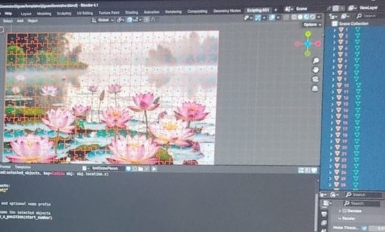

Pieceful Moments is made with so much passion to make it the coziest VR Jigsaw Game. This is just the beginning and there is a lot of cool features to come
In a fast and hectic world, I hope it helps you Escape to mystical worlds, slow down and feel joy in the small details
I'd love for you to be part of the journey as the game grows. Join our Discord Server to share your feedback and ideas, vote on future puzzle themes, and have cozy gameplay sessions together
What Make it Unique
400+ puzzle pieces running stable without any lagging
Unique Puzzle Selection Interaction, to complete the vibe of interdimensional traverler, rotate the magical wheel to select your puzzle
Enjoy your free 15 DLC pack on game download
Play how you are comfortable, whether Hand Tracking or with Controller
Beginner Friendly with only Trigger button controlling everything and physical touch interactions
Every Puzzle is its own World with carefully selected AI-generated skyboxes & music
Future-proof Scalable Codebase build to support new puzzle packs, collectibles, new featuers
My Contributions
Game Design & Concept: Defined the experience goal and translated it into core mechanics
VR Interaction Design: Designed and implemented UI controls & iterated on it multiple times till reaching the balance through unique, matching the vibe and beginner friendly UI
Editor Tools & Automation Scripts: to help automating the process of puzzle pieces slicing, layout and DLC packaging
Performance Optimization: Tuned graphics and interaction systems to achieve the balance between high quality graphics and high stable FPS
Artwork & Atmosphere: hand-picked high-quality AI generated puzzle images, sounds, skyboxes for each puzzle
Meta Platform Integration: Implemented DLC using Meta Store's DLC API, handled entitlement checks and ensured submission compilance
Behind The Scenes
The game have been through a lot of iterations to achieve the best quality and results. Here is a sneak peak from previous iterations
test old shuffle:
didn't work out cause it caused lagging on large piece no
first physical puzzle selection UI:
by grabbing a phyiscal puzzle box and putting it on the table to start the game
2nd Home:
Cozy Wooden Hut in the middle of the wood
3rd Home:
A Better Cozy Wooden Hut and reverted to 2D UI
Blender Modelling
Used python scripts in blender to automated and speed up the puzzle pieces modelling

Final Zen Home
Finally settled on an interdimensional theme with a Zen home found between space and time